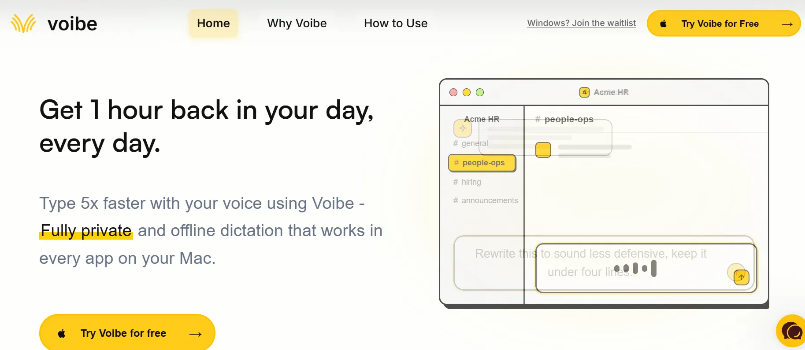

Most knowledge workers do not lose their day to one catastrophic event. They lose it in pieces — a fifteen-minute email thread here, a thirty-minute meeting that could have been a message there, twenty minutes reorganizing a task list that somehow never gets shorter. By the time 5 PM arrives, the work that actually needed focused attention is still waiting. The urgent always seems to push out the important. If that sounds familiar, you are far from alone. Studies consistently show that professionals spend between 30 and 50 percent of their working hours on tasks that do not directly advance their core goals — administrative work, repetitive communication, and the organizational overhead of just keeping track of everything. That is the productivity crisis hiding in plain sight. And it is exactly what Voibe AI was built to solve.
The promise Voibe AI makes is specific and measurable: get one hour back in your day, every day. That is not a vague commitment to "boost your efficiency" or "supercharge your workflow." It is a concrete target built around a concrete approach — using AI to automate the repetitive, low-value tasks that quietly consume enormous amounts of professional time. If you have heard similar claims before and remained skeptical, that skepticism is reasonable. But the difference with genuinely intelligent AI workflow automation is that it does not just speed up tasks — it eliminates entire categories of them.
In this review, we take a close look at what Voibe AI actually does, how its features work in practice, who benefits most from using it, and where it fits into the broader landscape of AI productivity tools. By the end, you will have a clear picture of whether this platform is worth your time — and whether that recovered hour is real.

Voibe AI is an intelligent productivity platform that automates workflows, prioritizes tasks, and helps professionals reclaim meaningful time every single day.
⚡ Quick Summary: Is Voibe AI Worth It?
- What it is: An AI-powered productivity assistant and workflow automation platform designed to save users at least one hour every day.
- Best for: Entrepreneurs, freelancers, remote teams, startup founders, marketing professionals, and anyone drowning in repetitive tasks and administrative overhead.
- Key advantage: Automates the low-value, high-frequency tasks that quietly consume the most time — communication, task organization, scheduling, and follow-ups.
- Worth considering if: You feel like your day disappears into busywork and your most important work keeps getting pushed to tomorrow.
- Verify pricing: Visit the official Voibe AI website for current plan details — pricing in the AI tools space evolves frequently.
What Is Voibe AI?
Voibe AI is an AI-powered productivity platform built around a straightforward but ambitious goal: systematically give professionals back the time they lose to the operational overhead of modern work. At its core, the platform is an intelligent workflow assistant — something that understands how you work, identifies where time is being wasted, and uses AI automation to eliminate or dramatically reduce that waste.
This is not a simple to-do list with an AI badge attached. Voibe AI operates across multiple dimensions of daily work simultaneously — managing tasks, supporting communication, optimizing how meetings and time blocks are structured, and providing data-driven insights into where your hours are actually going. The goal is a comprehensive layer of AI assistance that fits around your existing work style rather than demanding you change how you work to fit the tool.
The platform targets a wide audience: solo professionals who wear every hat in their business, freelancers juggling multiple client relationships, startup founders managing chaos across dozens of open threads, remote teams trying to collaborate efficiently across time zones, and corporate professionals navigating the relentless flow of emails, Slack messages, and calendar invites. What all these groups share is the experience of losing significant productive time to tasks that feel necessary but do not actually advance anything meaningful.
Voibe AI's core concept is that an intelligent AI system, working alongside you throughout the day, can identify and handle that category of work better and faster than you can while your focus is elsewhere. The result — when it works well — is that the tasks you need to do get done, and the time you were spending doing them comes back to you.
Why Productivity Tools Matter More Than Ever
Before looking at what Voibe AI specifically does, it is worth understanding why the problem it addresses has become so pressing in 2026.
Information overload is now the baseline. The average professional receives well over one hundred emails per day, participates in multiple messaging platforms simultaneously, and is expected to be responsive across all of them. Processing this volume of incoming information — even just deciding what requires attention and what does not — takes meaningful time and cognitive energy. Multiply that across every working day and the cumulative cost is staggering.
Meeting culture has reached a point of genuine dysfunction. Most organizations default to scheduling a meeting whenever a decision needs to be made, a project needs to be updated, or two people need to align on something. Research from Microsoft and Harvard Business Review consistently shows that a significant portion of meetings are considered unproductive by participants — and yet the meetings continue because there is no cultural mechanism to stop them. The result is that calendar-heavy professionals can spend four to six hours in meetings on a busy day, leaving almost no time for actual work.
Context switching is draining productivity silently. Every time you move from one task to another — answering an email in the middle of a project, checking Slack while writing a report, attending a meeting immediately before a creative session — your brain pays a switching cost. Getting back to the previous level of focus takes anywhere from five to twenty-five minutes, depending on the depth of concentration required. When you switch context multiple times per hour, as most modern workers do, the cumulative focus loss is enormous.
Administrative burden is growing, not shrinking. Despite the proliferation of productivity tools, most professionals report spending more time on administrative tasks than five years ago. Project management platforms require updates. Reporting systems require input. Client communication requires documentation. The tools that were supposed to save time have created their own overhead — and AI automation is emerging as the only realistic solution to this compounding problem.
Key Features of Voibe AI
Voibe AI's time savings come from a coordinated set of features, each targeting a different category of work that commonly consumes disproportionate amounts of professional time. Here is a detailed look at what the platform actually provides.
AI-Powered Workflow Automation
At the foundation of Voibe AI is its workflow automation engine. The platform learns how you handle different categories of work — what tasks follow what events, which responses you send to which types of requests, how you structure recurring processes — and builds automation rules around those patterns. Once established, these automations run without manual input, handling tasks in the background while you focus on work that actually requires your attention.
The practical value here is not just speed — it is elimination. A task that previously took five minutes of your attention, handled by automation, now takes zero minutes of your attention. Across a typical workday, those five-minute tasks accumulate into hours. Automating them systematically is where the largest time savings come from.
Smart Task Management
Task management sounds simple until you are managing a hundred open items across multiple projects with shifting priorities and no clear way to decide what to do next. Voibe AI's task management goes beyond a standard list by applying AI to the actual problem of deciding what deserves your attention at any given moment.
The platform analyzes your tasks in terms of deadline proximity, dependency relationships, estimated effort, and strategic importance — then presents a prioritized view of what to work on rather than leaving you to figure it out yourself. This removes the decision overhead that accumulates at the start of every work session and reduces the mental load of maintaining situational awareness across everything you have in flight. Less time deciding what to do means more time actually doing it.
Automated Communication Assistance
Communication — email, messages, follow-ups, status updates — is one of the largest time sinks in professional life. Voibe AI addresses this by automating the routine communication layer: drafting replies based on context, generating follow-up messages at appropriate intervals, summarizing long message threads, and suggesting responses to common request patterns.
The goal is not to replace genuine human communication but to eliminate the time spent writing messages that follow predictable patterns. A follow-up email after a meeting, a status update to a client, a response to a frequently asked question — these communications have value, but they do not require original thinking. AI can handle the drafting while you handle anything that genuinely requires your judgment and voice.
Meeting Productivity Support
Meetings are a uniquely expensive form of time consumption because they involve multiple people simultaneously. Every hour a five-person team spends in an unnecessary meeting is five hours of collective productive time gone. Voibe AI approaches this problem by helping users prepare for meetings more efficiently, structure agendas, and extract clear action items and decisions from meeting outputs.
The platform can help you assess whether a proposed meeting actually requires synchronous discussion or could be handled asynchronously, reducing the total number of meetings you attend without dropping the ball on any important conversations. The meetings you do attend become more focused and more productive because the preparation and follow-up work is handled automatically.
Daily Workflow Optimization
Voibe AI studies your daily work patterns over time and uses that understanding to suggest optimizations — when to schedule deep work, how to structure your week to match your natural energy levels, when recurring tasks tend to create bottlenecks, and how to batch similar activities for efficiency. This is not generic productivity advice but personalized recommendations based on your actual behavior and the actual demands of your specific work.
The impact compounds over time. Small daily optimizations — thirty minutes saved here, an unnecessary context switch avoided there — accumulate into significant structural improvements in how a week feels and what gets accomplished.
Intelligent Prioritization
Not everything that feels urgent is important. Not everything important feels urgent. Managing the gap between urgency and importance is one of the most demanding cognitive tasks in professional life, and most people handle it imperfectly under the pressure of real-time demands. Voibe AI's intelligent prioritization system helps bridge this gap by analyzing your work against your stated goals and flagging when your attention is being pulled toward low-value tasks at the expense of high-value ones.
This feature is particularly valuable for entrepreneurs and leaders who carry the broadest workloads — where the temptation to handle reactive work instead of proactive work is strongest, and where the cost of misallocating focus is highest.
Time-Saving AI Suggestions
Beyond automated workflows, Voibe AI surfaces proactive suggestions throughout the day — prompting you to delegate a task that fits someone else's capacity, flagging a deadline that is approaching earlier than your current pace would meet, suggesting a template that could speed up a document you are working on, or recommending that a recurring meeting be shortened based on its consistent actual duration.
These suggestions are context-aware, drawing on your work data to be relevant rather than generic. The difference between helpful advice and noise is specificity — and Voibe AI's suggestions are built to be specific to your actual situation.
Productivity Insights and Analytics
You cannot improve what you cannot see. Voibe AI's analytics layer provides a clear picture of where your time is actually going — broken down by project, task type, communication activity, and focus time versus meeting time. This data-driven view of your workday often surfaces surprises: tasks that feel minor but consume major time, projects that are consistently overrunning estimates, or communication patterns that are eating into focused work hours.
With this visibility, you can make deliberate decisions about where to apply automation, which activities to reduce, and how to structure future work to better protect your most productive hours. The analytics transform time management from a gut-feel exercise into something you can actually measure and improve systematically.
How Voibe AI Helps You Save 1 Hour Every Day
An hour per day sounds ambitious. But when you break it down across specific user types, the math becomes quite straightforward. The time savings accumulate from multiple small wins across the day rather than from any single large-scale automation.
Entrepreneurs
The Founder Managing Every Aspect of a Growing Business
A founder's day is an endless stream of competing demands — investor updates, team check-ins, product decisions, customer escalations, and operational housekeeping. Voibe AI automates the operational layer: drafting status updates, organizing meeting follow-ups, managing task lists, and surfacing what actually needs the founder's attention versus what can be delegated or automated. The result is that more of the founder's day goes toward decisions only they can make, and less goes toward administrative tasks anyone — or any AI — could handle. Savings: easily 60 to 90 minutes per day for active startup founders.
Freelancers
The Independent Professional Juggling Multiple Client Relationships
Freelancers run their entire business solo — client communication, project delivery, invoicing, and business development all fall on one person. Voibe AI automates the communication overhead: follow-up emails, project status updates, invoice reminders, and intake responses. It also helps freelancers stay on top of multiple simultaneous projects without anything slipping through the cracks. Recovering an hour per day for a freelancer billing at a professional rate represents direct revenue improvement, not just quality-of-life gain. Savings: 45 to 75 minutes per day depending on client volume.
Remote Teams
The Distributed Team Collaborating Across Time Zones
Remote teams face a specific productivity drain: the coordination overhead of asynchronous work. Status updates, alignment check-ins, and progress visibility all require communication that takes time to send, read, and respond to. Voibe AI automates the routine coordination layer — generating automatic status summaries, flagging when project timelines are at risk, and reducing the number of synchronization meetings required. Each team member recovers time from reduced coordination overhead, and the team as a whole makes faster decisions with less meeting time. Savings: 30 to 60 minutes per team member per day.
Startup Founders
The Early-Stage Founder Wearing Every Hat at Once
Early-stage founders often handle sales, product, operations, and team management simultaneously. The context switching alone — moving from a product discussion to a customer call to an investor update in a single afternoon — is exhausting and expensive. Voibe AI's daily workflow optimization helps founders structure their days to minimize context switching, batch similar tasks, and protect blocks of focused time for the work that most demands their attention. Savings: 60 to 90 minutes per day from reduced context switching and automated operational tasks.
Students
The Student Balancing Coursework, Projects, and Deadlines
Students deal with a version of the productivity problem that is easy to underestimate: multiple deadlines across multiple subjects, group project coordination, assignment tracking, and the constant temptation of distraction. Voibe AI's task management and intelligent prioritization help students maintain a clear view of what needs attention and in what order — eliminating the time spent anxiously reviewing to-do lists without actually making progress. Savings: 30 to 45 minutes per day from better prioritization and reduced planning overhead.
Marketing Teams
The Marketing Team Running Campaigns Across Multiple Channels
Marketing professionals manage content calendars, campaign tracking, client or internal reporting, and team coordination simultaneously. Voibe AI automates the reporting and status communication layer, generates content planning suggestions, and helps teams prioritize campaign work against deadlines and performance data. The time recovered from administrative reporting alone — drafting updates, compiling metrics, coordinating approvals — is typically significant. Savings: 45 to 70 minutes per day for active marketing team members.
Customer Support Teams
The Support Team Handling High Volumes of Repetitive Inquiries
Customer support workflows involve an enormous amount of repetitive communication — answering similar questions, routing tickets, writing follow-ups, and escalating issues through predictable paths. Voibe AI's automated communication assistance handles the routine layer of this work, drafting responses to common inquiry patterns and managing follow-up timing automatically. This frees support professionals to focus their attention on complex, escalated, or high-sensitivity cases where their judgment and empathy actually matter. Savings: 60 to 90 minutes per day for high-volume support professionals.
Real-World Use Cases
The practical value of an AI productivity tool only becomes real when you can see it applied to concrete situations. Here is how Voibe AI addresses the specific scenarios where professional time most commonly disappears.
Managing Email Overload
Email is the single most widely cited productivity drain in professional life. The problem is not just volume — it is the mental energy required to process, prioritize, and respond to a constant stream of incoming messages. Voibe AI helps by drafting context-aware responses, categorizing incoming messages by urgency and type, and automating replies to recurring request patterns. Users report moving through their inbox significantly faster once the platform learns their communication patterns — and with considerably less mental fatigue.
Organizing Meeting Outputs
The work that meetings generate — action items, decisions, follow-ups, documentation — often gets lost or delayed simply because there is no structured system for capturing and routing it. Voibe AI automatically organizes meeting outputs, assigns tasks with owners and deadlines, and generates follow-up communication to ensure nothing falls through the cracks. What previously required thirty minutes of post-meeting documentation work gets handled in the background.
Handling Repetitive Project Management Tasks
Project management involves a significant amount of repetitive operational work: status updates, timeline tracking, milestone notifications, and team coordination. Voibe AI automates this operational layer — generating status summaries, flagging timeline risks, and routing notifications — so project managers can focus on the judgment-intensive work of managing dependencies, resolving blockers, and making prioritization decisions.
Streamlining Team Collaboration
Collaboration overhead is one of the most invisible but costly productivity drains in modern organizations. The back-and-forth messages to coordinate schedules, align on approaches, and track who is responsible for what adds up to hours of collective time every week. Voibe AI reduces this overhead by automating coordination tasks and surfacing relevant context when team members need it — so that the conversations that do happen are substantive rather than administrative.
Content Planning and Scheduling
Content creators and marketing professionals spend a surprising amount of time on content operations — planning calendars, scheduling publications, tracking performance, and managing approval workflows. Voibe AI handles the operational layer of content management automatically, freeing creative professionals to spend more time on the actual content and less time on the logistics surrounding it.
User Experience and Interface
A productivity tool only delivers value if people actually use it — and that means the experience of using it has to be genuinely good rather than just functional.
Voibe AI is designed with a clean, focused interface that prioritizes clarity over feature density. The dashboard gives users a quick, scannable view of their most important tasks, upcoming commitments, and AI-generated suggestions — without the visual noise that makes some productivity platforms feel overwhelming before you have even started. First-time users can navigate the core features without a tutorial, which matters for tools that need to become habits rather than occasional-use utilities.
The onboarding process is structured to get users to value quickly. Rather than asking you to set up dozens of integrations and preferences before seeing anything useful, Voibe AI's guided setup identifies your most common pain points and configures the most relevant automations first. You can start with a basic configuration and layer in more sophisticated workflows as you become comfortable with how the system works.
The learning curve is real — any AI tool that learns your work style requires a calibration period during which the suggestions and automations are less precisely tuned than they will become over time. But the baseline functionality is useful from day one, which means users do not have to invest weeks of patient setup before getting value. The system improves continuously as it learns your patterns, which means the ROI increases over time rather than plateauing.
Benefits of Using Voibe AI
The value Voibe AI delivers extends beyond the headline time savings. Here is a comprehensive look at what changes when you start using the platform consistently.
- Increased daily productivity: More focused work hours completed in the same calendar day, with less time spent on low-value tasks.
- Reduced cognitive load: AI handles the mental overhead of tracking, prioritizing, and managing routine tasks so your working memory can focus on substantive work.
- Better focus and fewer interruptions: Automated handling of routine interruptions means fewer context switches during deep work sessions.
- Improved work-life balance: Recovered time at work means less spill into personal time — the hour saved at the office does not become an extra hour after dinner.
- Faster decision-making: AI-driven prioritization removes the indecision overhead from choosing what to work on next, so you move into action faster.
- Enhanced team collaboration: Automated coordination reduces the friction of working across teams and time zones.
- Reduced deadline stress: Intelligent deadline tracking and proactive alerts mean fewer last-minute panics and more consistent delivery.
- Better visibility into time usage: Analytics surface where your hours are actually going, enabling deliberate rather than reactive time management.
- Consistent professional communication: Automated communication assistance ensures follow-ups and status updates happen reliably without requiring manual reminders.
- Compounding returns: As the AI learns your patterns and preferences, the accuracy and relevance of its automation improves — meaning the value delivered increases over time rather than staying static.
Potential Limitations
Every productivity tool has trade-offs, and an honest review needs to address them directly.
Initial calibration period: Voibe AI becomes more accurate and more useful as it learns your specific work patterns, but that learning takes time. In the first days and weeks, some suggestions may feel imprecise or automation rules may need manual adjustment. Users who expect immediate perfection may find this adjustment period frustrating, even though it is a normal feature of AI systems that personalize over time.
Dependence on integrations: The platform delivers its strongest value when it is connected to the tools you use most heavily — your email, calendar, project management system, and communication platforms. The more complete the integration setup, the more effectively Voibe AI can automate and optimize across your workflow. Users whose toolstack includes niche or uncommon applications may find integration coverage incomplete in some areas.
AI accuracy considerations: Like all AI systems, Voibe AI is not infallible. Automated communication drafts may occasionally miss nuance. Prioritization suggestions may not always align perfectly with your actual priorities. Users should treat AI outputs as starting points for review rather than finished products — particularly for external communications where accuracy and tone carry professional weight.
Feature availability by plan: More advanced automation capabilities and deeper analytics may be available only on higher-tier plans. Users on entry-level plans may not have access to the full feature set described in this review. Check the official Voibe AI website for current plan details before committing.
Pricing considerations: While the time savings Voibe AI can deliver often justify the cost easily, pricing in the AI tools space evolves frequently. What represents good value today may change as the market develops. Verify current pricing directly on the official Voibe AI website rather than relying on third-party sources.
Voibe AI Pricing
Specific pricing tiers and their exact feature sets change as platforms in this space grow and evolve — so rather than quote figures that may be out of date by the time you read this, here is what is worth knowing when you evaluate Voibe AI's pricing.
AI productivity platforms in this category typically structure their plans around individual versus team use, with higher tiers unlocking more advanced automation, greater integration depth, and expanded analytics. There is usually a trial or free entry point that lets you explore core features before committing to a paid plan — which is the right way to evaluate any tool that promises to change how you work.
The value case for Voibe AI is strongest when you think about it as a return on investment rather than a subscription cost. If the platform saves one hour per day, and your time is worth anything at all, the math in favor of a reasonable subscription price becomes clear quickly. An hour of professional time is worth considerably more than any realistic monthly subscription fee — which means the investment pays for itself before most billing cycles close.
For the most accurate and up-to-date pricing information, visit the official Voibe AI website directly. Look for trial options, explore what each tier includes, and match the plan to the specific use case you want to solve first.
Voibe AI vs Traditional Productivity Methods
To understand what Voibe AI changes, it helps to put it side by side with the approaches most professionals currently use to manage their time and work.
| Aspect | Traditional Methods | Voibe AI |
|---|---|---|
| Time Efficiency | Manual task management and scheduling — hours spent organizing work | AI automates prioritization and scheduling — minimal manual overhead |
| Automation | None — every task requires manual action and decision-making | Workflow automation runs repetitive tasks in the background automatically |
| Task Management | Manual list building and daily reorganization | Intelligent prioritization based on deadlines, importance, and context |
| Communication | Every email and message written from scratch or templated manually | AI drafts routine communication; human reviews and sends |
| Scalability | Breaks down as workload increases — more tasks means more time spent managing | Scales with workload — more tasks handled by automation without proportional time increase |
| Collaboration | Manual coordination messages and status updates across the team | Automated coordination and status reporting reduces team communication overhead |
| Insights | No visibility into where time actually goes without manual time tracking | Automatic analytics show exactly where hours are spent with no manual logging |
| Cost-Effectiveness | Low upfront cost but high ongoing hidden cost in lost professional time | Platform subscription cost offset by significant recovery of billable or productive time |
Who Should Use Voibe AI?
The platform delivers real value to a specific range of users — and being clear about that fit is more useful than suggesting it is right for everyone.
Entrepreneurs and Business Owners
Business owners who manage broad workloads across many domains simultaneously benefit enormously from an AI layer that handles the operational overhead of running a business. The recovered time goes directly toward the strategy, relationships, and decisions that only the owner can provide. For entrepreneurs, Voibe AI is less a productivity tool and more a force multiplier for the hours that matter most.
Small Businesses and Agencies
Small teams that cannot afford dedicated administrative staff benefit from AI automation that covers the operational overhead those positions would otherwise fill. Client communication management, project tracking, status reporting, and workflow coordination are all areas where Voibe AI delivers consistent value to lean organizations operating without surplus headcount.
Freelancers and Independent Professionals
Running a solo business means administrative tasks compete directly with billable work. Every hour spent on operational overhead is an hour not spent earning revenue or building relationships. Voibe AI's ability to automate the communications and organizational tasks of freelance work makes it a particularly strong fit for independent professionals who want to protect their billable hours without things falling through the cracks.
Content Creators
Content creators live the tension between creative work and content operations — planning, scheduling, distributing, tracking, and reporting on content while also producing it. Voibe AI handles the operational side of content work so creators can stay in creative mode for more of their day.
Remote and Distributed Teams
The coordination overhead of remote work makes AI assistance particularly valuable. Voibe AI reduces the volume of synchronization communication required without reducing the alignment it creates — which means remote teams can operate with fewer meetings and less administrative friction without losing the shared awareness they need to work effectively together.
Students and Academics
Students managing multiple course commitments, research projects, and extracurricular obligations benefit from intelligent task prioritization and deadline management. The platform removes the cognitive overhead of maintaining situational awareness across many simultaneous responsibilities, which is one of the hidden causes of student productivity problems.
Corporate Professionals and Managers
Knowledge workers inside larger organizations often have the heaviest meeting loads and the most complex communication demands. Voibe AI's meeting productivity support and automated communication assistance addresses exactly the friction points that dominate corporate professional life — reducing the time spent in preparation, follow-up, and routine coordination.
Pros and Cons of Voibe AI
✓ Pros
- Concrete, measurable time savings across daily work activities
- AI workflow automation eliminates entire categories of repetitive tasks
- Intelligent task prioritization removes decision overhead
- Automated communication drafting reduces time spent on routine messages
- Meeting productivity features reduce prep and follow-up time
- Productivity analytics reveal where time actually goes
- Personalization improves over time as the AI learns your patterns
- Clean, accessible interface suitable for users at all experience levels
- Applicable across a wide range of industries and professional roles
- Daily time savings compound into significant weekly and annual gains
- Reduces cognitive load and workplace stress alongside time savings
- Supports both individual professionals and team-level productivity
✗ Cons
- Initial calibration period before AI personalization becomes precise
- Maximum value requires complete integration with existing tools
- AI-generated communications require review before sending externally
- Advanced features may be limited to higher-tier plans
- Pricing should be verified directly — evolves frequently in this market
- Teams must invest time in initial setup to see full automation benefits
- Not a substitute for the human judgment that complex situations require
Frequently Asked Questions
What is Voibe AI?
Voibe AI is an AI-powered productivity assistant and workflow automation platform built to help professionals save at least one hour per day by automating repetitive tasks, managing work intelligently, and reducing the administrative overhead that consumes so much of a typical workday. It combines smart task management, automated communication assistance, meeting productivity support, and analytics into a single integrated productivity platform.
How does Voibe AI save time?
Voibe AI saves time by automating the low-value, high-frequency tasks that quietly consume most professionals' days. This includes automating routine communication drafts, intelligently prioritizing tasks so you spend less time deciding what to do next, reducing meeting preparation and follow-up overhead, and surfacing insights that help you restructure your work to protect focused time. The savings accumulate from multiple small wins across the day rather than from any single feature.
Is Voibe AI suitable for teams?
Yes. Voibe AI supports both individual users and team-level productivity. Teams can use the platform to automate shared workflows, reduce the communication overhead of collaboration, coordinate task management across members, and gain visibility into collective time usage. Remote and distributed teams in particular benefit from the platform's ability to reduce coordination overhead without requiring more meetings or more synchronous communication.
Does Voibe AI integrate with other tools?
Voibe AI is designed to integrate with the tools professionals already use daily — email platforms, calendar systems, project management tools, and communication applications. The extent and completeness of available integrations may evolve as the platform develops. For the most current and comprehensive list of supported integrations, check the official Voibe AI website directly before assuming compatibility with your specific toolstack.
Is Voibe AI beginner-friendly?
Yes. Voibe AI is designed to be accessible to users regardless of technical background. The interface prioritizes clarity, the onboarding process guides new users through setup step by step, and the AI handles complexity behind the scenes so you do not need to configure technical workflows to start getting value. Most users find the core features intuitive from their first session, with deeper automation capabilities available as they become more comfortable with the platform.
Can freelancers benefit from Voibe AI?
Freelancers are among the users who benefit most significantly from Voibe AI. Running a solo business means handling client communication, project delivery, and operational overhead all simultaneously, without administrative support. Voibe AI automates the routine operational layer of freelance work — follow-ups, status updates, invoice reminders, intake responses — so that independent professionals can protect more of their time for billable work and client relationships.
Does Voibe AI automate repetitive work?
Yes, automating repetitive work is one of Voibe AI's core strengths. The platform learns patterns in your workflow — tasks that follow a consistent structure, communications that repeat across similar situations, processes that run the same way every time — and automates them so they happen with minimal or no manual input. This is where the largest proportion of daily time savings comes from: not speeding up tasks but eliminating the time you personally spend on them entirely.
Is Voibe AI worth it?
Whether Voibe AI is worth it depends on how much you value the time it can recover. For professionals who recognize that lost productive hours represent real financial and opportunity cost, the time savings the platform delivers — one hour per day, five hours per week, 250 hours per year — almost always justify a reasonable subscription price. The ROI case is strongest for freelancers, founders, and team leads who carry the heaviest operational workloads and feel the cost of distraction most acutely.
What industries can use Voibe AI?
Voibe AI's workflow automation and productivity capabilities apply across virtually any industry involving knowledge work. Marketing teams, content creators, startup founders, customer support professionals, consultants, educators, project managers, sales teams, HR professionals, and remote workers across countless sectors all deal with the administrative overhead and repetitive task volume that Voibe AI is designed to address. The underlying problems — too many tasks, too much routine communication, too little focused time — exist across industries.
How do I get started with Voibe AI?
Getting started involves visiting the official Voibe AI website, creating an account, and completing the guided onboarding process. The setup flow walks you through connecting your existing tools, identifying your highest-priority workflow pain points, and configuring initial automations. Most users can complete the core setup quickly and start seeing time savings within their first working session with the platform. Look for any available trial period so you can experience the product before committing to a paid plan.
Final Verdict
🏆 Our Assessment: Voibe AI
Voibe AI addresses one of the most pervasive and underappreciated problems in professional life: the quiet, compounding drain of repetitive tasks, routine communications, and organizational overhead that consumes hours every day without producing proportional value. Its approach — using AI to automate the low-value work so that human attention can concentrate on high-value work — is the right strategy for a problem that manual productivity methods have consistently failed to solve. The platform's combination of workflow automation, smart task management, communication assistance, and productivity analytics covers the full width of where daily time typically disappears.
The strongest version of Voibe AI's value proposition shows up for users who bring both genuine need and genuine commitment. Freelancers drowning in operational overhead, founders managing complexity across multiple workstreams, marketing teams running high-tempo campaigns, and remote teams dealing with coordination friction — these are the users for whom one recovered hour per day translates into something concretely meaningful. For light users or those whose work is already highly structured and low-friction, the gains may be more modest, though still real.
The honest limitations are worth keeping in mind. There is a calibration period while the AI learns your patterns. Integration depth matters — the more completely Voibe AI connects to your existing toolstack, the more effectively it can automate across your workflow. And AI-generated outputs, particularly communications, benefit from human review before going external. These are not fatal weaknesses; they are the realistic conditions under which any intelligent automation system operates well.
What stands out most about Voibe AI is its specificity. The promise is not generic productivity improvement — it is one concrete hour per day, built from recoverable waste that exists in almost every professional's workflow. That specificity reflects genuine product thinking about where time actually goes and what AI can realistically do to recover it. Platforms that can name the problem precisely are usually the ones that have actually solved it.
The bigger picture is worth holding onto as well. Tools like Voibe AI are not just about individual efficiency — they represent a fundamental shift in how intelligent humans and intelligent systems divide labor. The AI handles what it can do reliably: the repetitive, the predictable, the administratively intensive. You handle what only you can do: the creative, the relational, the judgment-intensive. That division of labor is where the real leverage lives. And it is exactly the direction that the best AI productivity tools are already moving. If recovering an hour per day every day — and everything that an extra 250 focused hours per year could mean for your work — sounds worth exploring, Voibe AI deserves a serious look.
Curious about more AI tools that are changing how professionals work, create, and build? Explore our full library of in-depth AI tool reviews on RapidFast — covering the platforms that are actually worth your time.